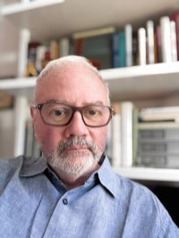

Simon Kilmurry
International Documentary Association
Moderator, panelist, filmmaker · 3 editions, 2016–2025
At the festival
2025
- Executive producer Rovina's Choice
2017
- Moderator Fireworks: Meet the Funders Panel
- Moderator Fireworks: Meet the Online Platforms Panel
2016
- Moderator Meet the Platforms Workshop Workshop
- Speaker Lightning Talks: International Documentary Association (IDA) - Documentary/Journalism Initiatives Event
Year not given
- Programme Contributor
Biography
Simon Kilmurry is a documentary producer. He has received one PrimeTime Emmy Award, 17 News & Documentary Emmys, and eight Peabody Awards. He is a Vice President and Governor of the Academy of Motion Pictures Arts and Sciences, a member of the Producers Guild of America, the Television Academy, and served on the board of jurors of the Peabody Awards from 2016-2022. He is an advisor to The Redford Center. Previously he was the executive producer of “POV” on PBS (2007-2015) and co-founded the WORLD Channel documentary series “America ReFramed” and served as a board member for Jewish Story Partners.
From the festival website (archived), 2025
Other bios (2)
Simon Kilmurry is the executive director of the International Documentary Association. In 2016, Kilmurry joined the board of jurors of the George Foster Peabody Awards. He serves as an international advisor to the Greenhouse Fund and is on the board of screeners of the Alfred I. duPont-Columbia University Awards. Prior to joining IDA he served from 1999–2015 in various roles at American Documentary | POV, including nine years as the executive producer of POV, the long-running PBS showcase of independent documentaries. In that role, he received 15 Emmy Awards, more than 60 Emmy nominations, six George Foster Peabody Awards, four DuPont Columbia Awards, and is a two-time recipient of the Best Continuing Series Award from the International Documentary Association.
From the festival website (archived), 2021
Simon Kilmurry is the executive director of the International Documentary Association. He serves as an international advisor to the Greenhouse Fund and is on the board of screeners of the Alfred I. duPont-Columbia University Awards. Prior to joining IDA he served from 1999–2015 in various roles at American Documentary | POV, the long-running PBS showcase of independent documentaries. His work has won numerous honors, including six George Foster Peabody Awards.
From the 2017 catalogue, p. 48